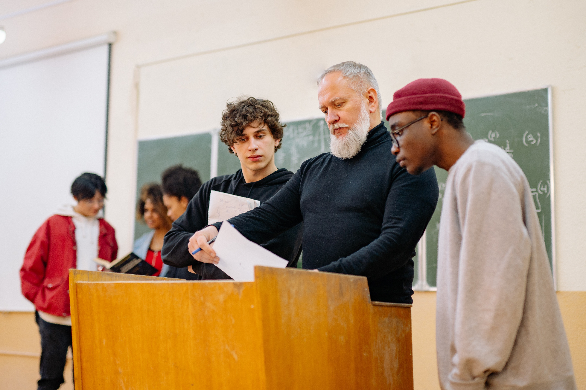
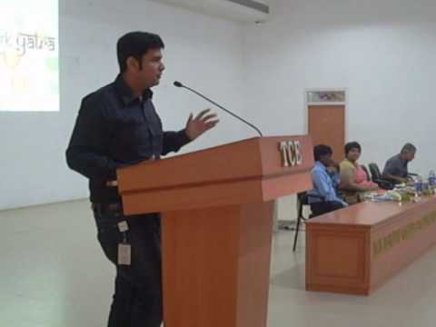
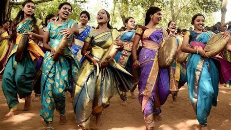
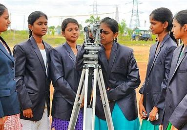
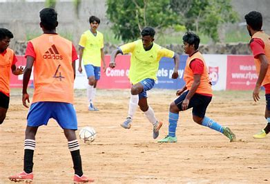
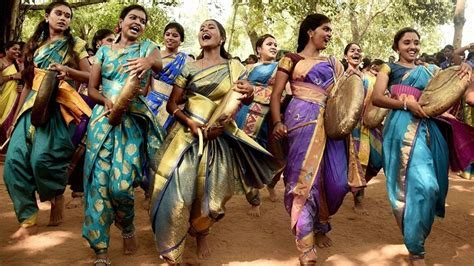
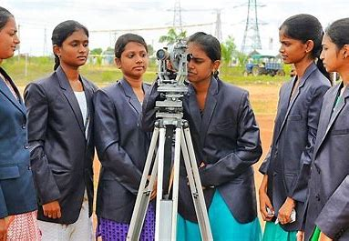
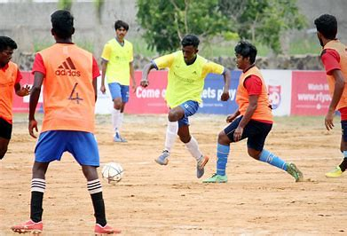

Blooff Arts and Science College for men
and Women (Autonomous) Pudukkottai, was established
in the year 1969. The college was started with
Pre-University Course and has grown gradually in
strength and stature in every sphere of activity.
At present 13 Under Graduate Courses, 10 Post
Graduate Courses, 6 M.Phil. and 6 Ph.D Courses are
being offered by the college. Shift System was
introduced in the year 2007 by the State Government
Policy of Education with the available infrastructure.
Four Under Graduate Courses have been introduced in
Shift II. The institution aims to uplift women students
from Pudukkottai district and also from nearby districts
like Thiruchirappalli, Perambalur and Sivagangai.


 




